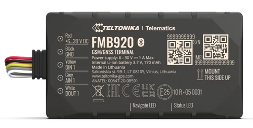
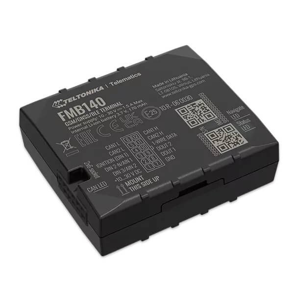
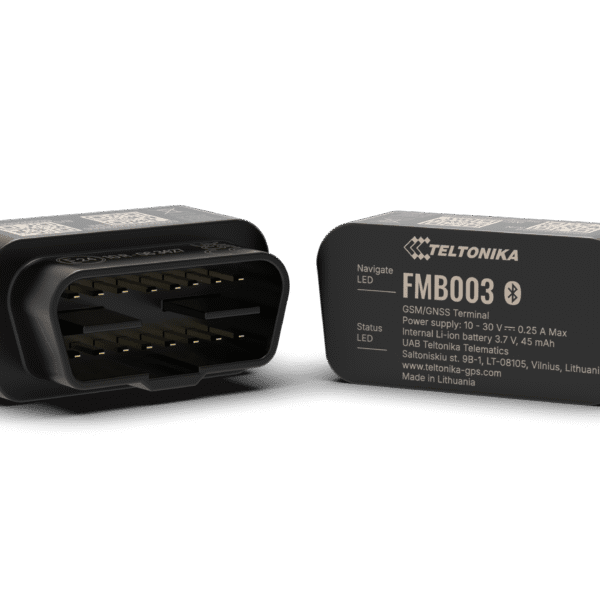
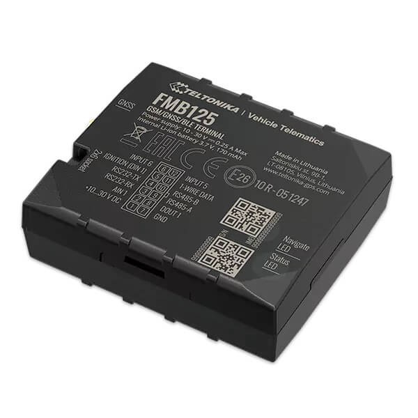
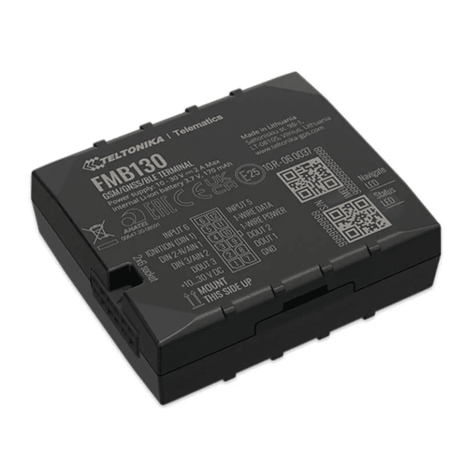
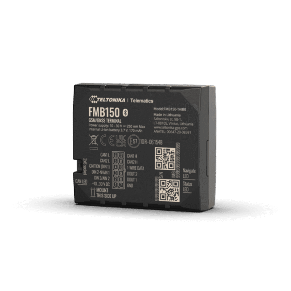
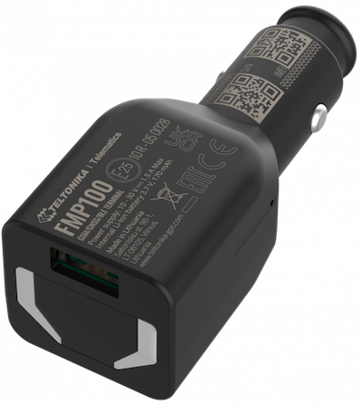
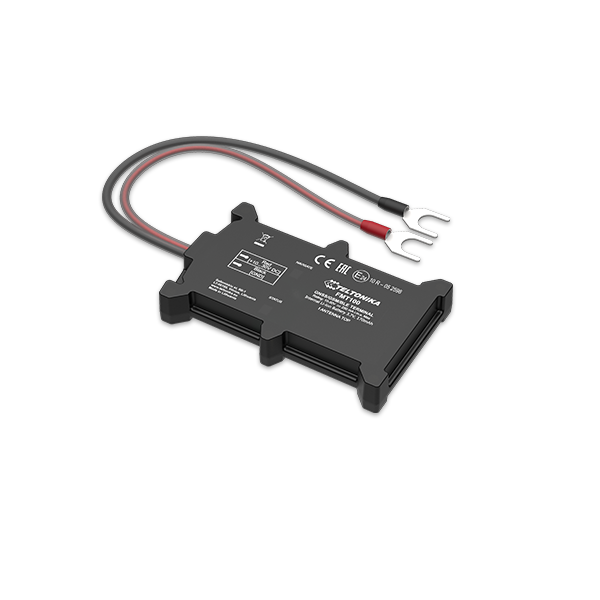
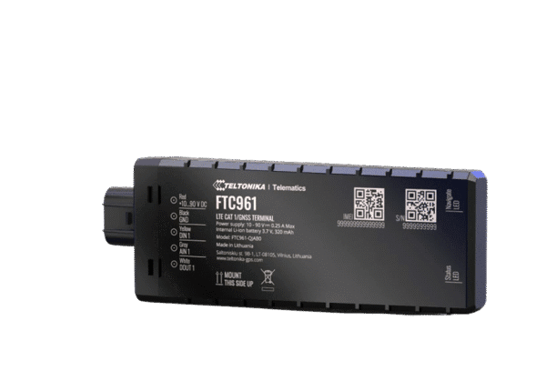

Discover Teltonika’s advanced tracking devices designed for reliable real-time location, telematics data, and fleet management intelligence.

Compact GPS tracker with Bluetooth, backup battery, and remote immobilization capability.

Tracker with integrated CAN data reading for vehicle diagnostics and advanced fleet monitoring.

Mini OBDII tracker for accurate real-time GPS tracking and diagnostics data.

Universal tracker with multiple I/O, Bluetooth, and dual SIM support for high flexibility.

Professional tracker with configurable inputs and outputs for advanced vehicle control.

Tracker with CAN data reading and advanced telematics features for heavy-duty fleets.

Compact GPS tracker with Bluetooth, backup battery, and remote immobilization capability.

Compact GPS tracker with Bluetooth, backup battery, and remote immobilization capability.

Versatile 4G LTE Cat 1 tracker with RS232, RS485 interfaces

Advanced 4G LTE Cat 1 tracker with flexible inputs

Advanced 4G LTE Cat 1 GPS tracker with integrated CAN data processor

4G LTE Cat 1 tracker for advanced applications with high capacity backup battery and external antennas

Plug-and-play tracker for easy installation via OBDII port with Bluetooth and GNSS connectivity.

Compact waterproof tracker designed for motorcycles, scooters, and power sports.

LTE Cat 1 tracker for modern fleets needing faster data, reliability, and long-term support.

LTE Cat 1 tracker for modern fleets needing faster data, reliability, and long-term support.